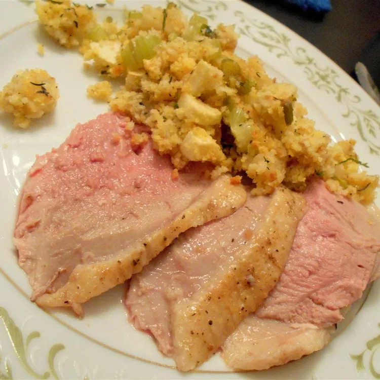

Roast Duck With Apple Dressing

Roast Duck
When you‘re in the mood for something rich and flavorful, try this wild duck rubbed with light seasoning and stuffed with apples, celery and onion.
Ingredients
- 1 (4pound) whole duck
- salt and pepper to taste
- 1 teaspoon poultry seasoning
- 1/2 tablespoon butter
- 3 tablespoons chopped onion
- 5 stallks celery, chopped
- 3 cups peeled, cored and chopped apple
- 3 cups cornbread crumbs
- 1 tabllespoon olive oil
Steps
- Rinse duck and pat dry; rub with salt, pepper, and poultry seasoning.
- Melt butter in a small skillet over medium heat. Saute onion and celery in butter until tender. In a medium bowl, combine with apple and cornbread crumbs. Mix together to make dressing (if necessary, add a little water to moisten).
- Preheat oven to 350 degrees F (175 degrees C).
- Fill the duck's cavity with dressing, and sew shut with kitchen twine. Rub outside of bird lightly with olive oil, and place in a shallow roasting pan or 9x13 inch baking dish.
- Bake in preheated oven for 60 to 80 minutes, or until internal temperature reaches 180 degrees F (80 degrees C.)